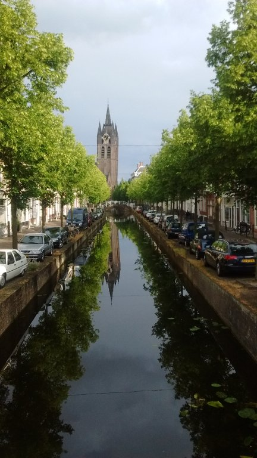

پیادهروی در دلفت-عصر بیست و دو جون دوهزار و پانزده

نمایی از کلیسای قدیم دلفت از انتهای خیابان قدیم دلفت. مثال نقضی برای ضرب المثل معروف «خشت اول گر نهد معمار کج». اواسط کار یکی فهمیده و جناب معمار گفته جلوی ضرر را از هرجا بگیری منفعت است. هر جور بوده بقیه برج را راست میسازند. بالای کلیسا را هم طوری تزیین میکنند که از دور مثل دیواری دیده شود که تا ثریا کج نرفته.